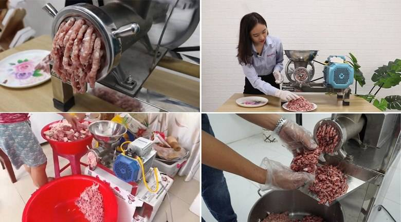

Lỗi thường gặp khi sử dụng máy xay thịt công nghiệp
Tân Minh Group
24/06/2024 13:00 5
Ttrong quá trình sử dụng máy xay thịt
công nghiệp, không thể tránh khỏi những lỗi thường
gặp. Bài viết này sẽ điểm qua một
số lỗi phổ biến và cách khắc phục hiệu quả để
bạn có thể tự tin sử dụng máy xay thịt công nghiệp của mình.

Lỗi thường gặp khi sử dụng máy xay thịt công nghiệp và cách khắc
phục
-
Máy không hoạt động:
- Dấu hiệu: Máy không có tín hiệu hoạt
động khi bật công tắc.
- Nguyên nhân:
- Nguồn điện: Chưa cắm điện, ổ cắm lỏng, nguồn điện không ổn
định.
- Công tắc: Công tắc bị hỏng.
- Cầu chì: Cầu chì bị cháy.
- Khắc phục:
- Kiểm tra nguồn điện, đảm bảo ổ cắm chắc chắn, nguồn điện
ổn định.
- Kiểm tra và thay thế công tắc nếu cần.
- Kiểm tra và thay thế cầu chì tương ứng.
-
Máy chạy nhưng không xay được thịt:
- Dấu hiệu: Máy hoạt động bình thường
nhưng thịt không được xay.
- Nguyên nhân:
- Lưỡi dao: Lưỡi dao bị mòn, cùn, kẹt thịt.
- Trục xoắn: Trục xoắn bị hỏng, không đẩy thịt vào lưỡi dao.
- Khắc phục:
- Kiểm tra, mài hoặc thay thế lưỡi dao.
- Kiểm tra và thay thế trục xoắn nếu cần.
-
Máy xay thịt bị kẹt:
- Dấu hiệu: Máy phát ra tiếng động lạ,
rung lắc mạnh, không thể tiếp tục xay.
- Nguyên nhân:
- Thịt cho vào quá nhiều.
- Thịt chưa được cắt nhỏ, xương lẫn trong thịt.
- Khắc phục:
- Ngắt nguồn điện ngay lập tức.
- Tháo rời bộ phận xay theo hướng dẫn.
- Lấy bỏ phần thịt bị kẹt.
- Cắt nhỏ thịt trước khi xay, loại bỏ xương.
-
Máy phát ra tiếng ồn lớn:
- Dấu hiệu: Máy phát ra tiếng ồn lớn bất
thường khi hoạt động.
- Nguyên nhân:
- Ốc vít: Ốc vít bị lỏng.
- Bạc đạn: Bạc đạn bị mòn, hư hỏng.
- Động cơ: Động cơ quá tải.
- Khắc phục:
- Kiểm tra và siết chặt ốc vít.
- Kiểm tra và thay thế bạc đạn.
- Giảm tải trọng xay cho máy, không xay quá lâu.
-
Máy xay thịt bị rò rỉ điện
- Dấu hiệu: Bị điện giật nhẹ khi chạm vào
máy, có hiện tượng phóng điện.
- Nguyên nhân:
- Dây điện: Dây điện bị hở, chuột cắn.
- Động cơ: Động cơ bị hỏng, rò rỉ điện.
- Nước: Nước rò rỉ vào động cơ.
- Khắc phục:
- Ngắt nguồn điện ngay lập tức.
- Tuyệt đối không tự ý sửa chữa.
- Liên hệ kỹ thuật viên để được kiểm tra và sửa chữa.
Mẹo sử dụng máy xay thịt công nghiệp hiệu quả và bền bỉ
để đảm bảo vệ sinh an toàn thực phẩm,
kéo dài tuổi thọ cho máy và sử dụng máy hiệu quả, bạn
cần lưu ý một số mẹo sau:
1. Lựa chọn máy phù hợp với nhu cầu
sử dụng:
- Xác định nhu cầu sử dụng:
Xay thịt cho gia đình, nhà hàng, quán
ăn,...
- Lựa chọn công suất phù hợp:
Công suất càng lớn, máy càng xay được nhiều thịt
trong một lần.
- Chọn kích thước cối xay:
Kích thước cối xay cần phù hợp với nhu cầu sử dụng.
2. Đọc kỹ hướng dẫn sử dụng trước
khi dùng:
3. Vệ sinh máy sạch sẽ sau mỗi
lần sử dụng:
- Tháo rời các bộ phận có thể tháo
rời và rửa sạch bằng nước ấm và xà phòng.
- Đặc biệt chú ý đến trục xoắn,
lưỡi dao và đầu đùn thịt để loại bỏ hoàn toàn cặn thịt và dầu mỡ.
- Lau khô tất cả các bộ phận bằng
khăn sạch sau khi rửa.
- Vệ sinh phần thân máy bằng khăn
ẩm, chú ý không để nước xâm nhập vào động cơ.
- Lắp ráp lại máy và bảo quản ở nơi
khô ráo, thoáng mát.
4. Bảo quản máy ở nơi khô ráo,
thoáng mát:
- Tránh để máy tiếp xúc trực tiếp
với ánh nắng mặt trời hoặc nơi có độ ẩm cao.
- Bảo quản máy trong kho hoặc tủ
khi không sử dụng.
5. Kiểm tra và bảo dưỡng máy định
kỳ:
- Sau mỗi 50 giờ sử dụng,
cần tra dầu mỡ cho các bộ phận chuyển động của máy.
- Mài lưỡi dao định kỳ để đảm bảo
hiệu quả xay.
- Kiểm tra các bộ phận của máy xem
có bị hư hỏng hay không và thay thế nếu cần thiết.
- Liên hệ trung tâm bảo hành ủy
quyền nếu máy gặp sự cố.
Social share
Bài viết liên quan
Comments
Chưa có comment.
Đề lại Comment